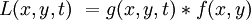
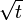
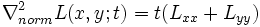
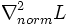
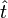
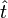
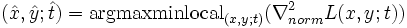
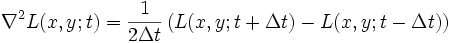
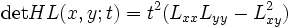
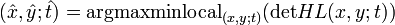

Blob detection
From Wikipedia, the free encyclopedia
| Feature detection | |
 Output of a typical corner detection algorithm |
|
| Edge detection | |
|---|---|
| Canny | |
| Canny-Deriche | |
| Differential | |
| Sobel | |
| Interest point detection | |
| Corner detection | |
| Harris operator | |
| Shi and Tomasi | |
| Level curve curvature | |
| SUSAN | |
| FAST | |
| Blob detection | |
| Laplacian of Gaussian (LoG) | |
| Difference of Gaussians (DoG) | |
| Determinant of Hessian (DoH) | |
| Maximally stable extremal regions | |
| Ridge detection | |
| Affine invariant feature detection | |
| Affine shape adaptation | |
| Harris affine | |
| Hessian affine | |
| Feature description | |
| SIFT | |
| SURF | |
| GLOH | |
| LESH | |
| Scale-space | |
| Scale-space axioms | |
| Implementation details | |
| Pyramids | |
In the area of computer vision, 'blob detection' refers to visual modules that are aimed at detecting points and/or regions in the image that are either brighter or darker than the surrounding. There are two main classes of blob detectors (i) differential methods based on derivative expressions and (ii) methods based on local extrema in the intensity landscape. With the more recent terminology used in the field, these operators can also be referred to as interest point operators, or alternatively interest region operators (see also interest point detection and corner detection).
There are several motivations for studying and developing blob detectors. One main reason is to provide complementary information about regions, which is not obtained from edge detectors or corner detectors. In early work in the area, blob detection was used to obtain regions of interest for further processing. These regions could signal the presence of objects or parts of objects in the image domain with application to object recognition and/or object tracking. In other domains, such as histogram analysis, blob descriptors can also be used for peak detection with application to segmentation. Another common use of blob descriptors is as main primitives for texture analysis and texture recognition. In more recent work, blob descriptors have found increasingly popular use as interest points for wide baseline stereo matching and to signal the presence of informative image features for appearance-based object recognition based on local image statistics. There is also the related notion of ridge detection to signal the presence of elongated objects.
[edit] The Laplacian of Gaussian
One of the first and also most common blob detectors is based on the Laplacian of the Gaussian (LoG). Given an input image f(x,y), this image is convolved by a Gaussian kernel

at a certain scale t to give a scale-space representation . Then, the Laplacian operator

is computed, which usually results in strong positive responses for dark blobs of extent  and strong negative responses for bright blobs of similar size. A main problem when applying this operator at a single scale, however, is that the operator response is strongly dependent on the relationship between the size of the blob structures in the image domain and the size of the Gaussian kernel used for pre-smoothing. In order to automatically capture blobs of different (unknown) size in the image domain, a multi-scale approach is therefore necessary.
A straightforward way to obtain a multi-scale blob detector with automatic scale selection is to consider the scale-normalized Laplacian operator
- 
and to detect scale-space maxima/minima, that are points that are simultaneously local maxima/minima of  with respect to both space and scale (Lindeberg 1998). Thus, given a discrete two-dimensional input image f(x,y) a three-dimensional discrete scale-space volume L(x,y,t)
is computed and a point is regarded as a bright (dark) blob if the
value at this point is greater (smaller) than the value in all its 26
neighbours. Thus, simultaneous selection of interest points  and scales  is performed according to
and scales  is performed according to
- .
Note that this notion of blob provides a concise and mathematically precise operational definition of the notion of "blob", which directly leads to an efficient and robust algorithm for blob detection. Some basic properties of blobs defined from scale-space maxima of the normalized Laplacian operator are that the responses are covariant with translations, rotations and rescalings in the image domain. Thus, if a scale-space maximum is assumed at a point (x0,y0;t0) then under a rescaling of the image by a scale factor s, there will be a scale-space maximum at (sx0,sy0;s2t0) in the rescaled image (Lindeberg 1998). This in practice highly useful property implies that besides the specific topic of Laplacian blob detection, local maxima/minima of the scale-normalized Laplacian are also used for scale selection in other contexts, such as in corner detection, scale-adaptive feature tracking (Bretzner and Lindeberg 1998), in the scale-invariant feature transform (Lowe 2004) as well as other image descriptors for image matching and object recognition.
[edit] The difference of Gaussians approach
From the fact that the scale-space representation L(x,y,t) satisfies the diffusion equation

it follows that the Laplacian of the Gaussian operator  can also be computed as the limit case of the difference between two Gaussian smoothed images (scale-space representations)
can also be computed as the limit case of the difference between two Gaussian smoothed images (scale-space representations)
- .
In the computer vision literature, this approach is referred to as the Difference of Gaussians (DoG) approach. Besides minor technicalities, however, this operator is in essence similar to the Laplacian and can be seen as an approximation of the Laplacian operator. In a similar fashion as for the Laplacian blob detector, blobs can be detected from scale-space extrema of differences of Gaussians.
[edit] The determinant of the Hessian
By considering the scale-normalized determinant of the Hessian, also referred to as the Monge–Ampère operator,
- 
where HL denotes the Hessian matrix of L and then detecting scale-space maxima/minima of this operator one obtains another straightforward differential blob detector with automatic scale selection which also responds to saddles (Lindeberg 1998)
- .
The blob points and scales
are also defined from an operational differential geometric definitions
that leads to blob descriptors that are covariant with translations,
rotations and rescalings in the image domain. In terms of scale
selection, blobs defined from scale-space extrema of the determinant of
the Hessian (DoH) also have slightly better scale selection properties
under non-Euclidean affine transformations than the more commonly used
Laplacian operator (Lindeberg 1998). In simplified form, the
determinant of the Hessian computed from Haar wavelets is used as the basic interest point operator in the SURF descriptor (Bay et al 2006) for image matching and object recognition.
[edit] The hybrid Laplacian and determinant of the Hessian operator (Hessian-Laplace)
A hybrid operator between the Laplacian and the determinant of the Hessian blob detectors has also been proposed, where spatial selection is done by the determinant of the Hessian and scale selection is performed with the scale-normalized Laplacian (Mikolajczyk and Schmid 2004)
 ,
, . This operator has been used for image matching, object recognition as well as texture analysis.
. This operator has been used for image matching, object recognition as well as texture analysis.
[edit] Affine-adapted differential blob detectors
The blob descriptors obtained from these blob detectors with automatic scale selection are invariant to translations, rotations and uniform rescalings in the spatial domain. The images that constitute the input to a computer vision system are, however, also subject to perspective distortions. To obtain blob descriptors that are more robust to perspective transformations, a natural approach is to devise a blob detector that is invariant to affine transformations. In practice, affine invariant interest points can be obtained by applying affine shape adaptation to a blob descriptor, where the shape of the smoothing kernel is iteratively warped to match the local image structure around the blob, or equivalently a local image patch is iteratively warped while the shape of the smoothing kernel remains rotationally symmetric (Lindeberg and Garding 1997; Baumberg 2000; Mikolajczyk and Schmid 2004). In this way, we can define affine-adapted versions of the Laplacian/Difference of Gaussian operator, the determinant of the Hessian and the Hessian-Laplace operator (see also Harris-Affine and Hessian-Affine).
[edit] Grey-level blobs, grey-level blob trees and scale-space blobs
A natural approach to detect blobs is to associate a bright (dark) blob with each local maximum (minimum) in the intensity landscape. A main problem with such an approach, however, is that local extrema are very sensitive to noise. To address this problem, Lindeberg (1993) studied the problem of detecting local maxima with extent at multiple scales in scale-space. A region with spatial extent defined from a watershed analogy was associated with each local maximum, as well a local contrast defined from a so-called delimiting saddle point. A local extremum with extent defined in this way was referred to as a grey-level blob. Moreover, by proceeding with the watershed analogy beyond the delimiting saddle point, a grey-level blob tree was defined to capture the nested topological structure of level sets in the intensity landscape, in a way that is invariant to affine deformations in the image domain and monotone intensity transformations. By studying how these structures evolve with increasing scales, the notion of scale-space blobs was introduced. Beyond local contrast and extent, these scale-space blobs also measured how stable image structures are in scale-space, by measuring their scale-space lifetime.
It was proposed that regions of interest and scale descriptors obtained in this way, with associated scale levels defined from the scales at which normalized measures of blob strength assumed their maxima over scales could be used for guiding other early visual processing. An early prototype of simplified vision systems was developed where such regions of interest and scale descriptors were used for directing the focus-of-attention of an active vision system. While the specific technique that was used in these prototypes can be substantially improved with the current knowledge in computer vision, the overall general approach is still valid, for example in the way that that local extrema over scales of the scale-normalized Laplacian operator are nowadays used for providing scale information to other visual processes.
[edit] Maximally stable extremum regions (MSER)
Matas et al (2002) were interested in defining image descriptors that are robust under perspective transformations. They studied level sets in the intensity landscape and measured how stable these were along the intensity dimension. Based on this idea, they defined a notion of maximally stable extremum regions and showed how these image descriptors can be used as image features for stereo matching.
Interestingly, there are close relations between this notion and the abovementioned notion of grey-level blob tree. The maximally stable extremum regions can be seen as making a specific subset of the grey-level blob tree explicit for further processing.
[edit] See also
- blob extraction
- corner detection
- affine shape adaptation
- scale-space
- ridge detection
- interest point detection
- feature detection (computer vision)
- Harris-Affine
- Hessian-Affine
[edit] References
- H. Bay, T. Tuytelaars and L. van Gool (2006). "SURF: Speeded Up Robust Features". Proceedings of the 9th European Conference on Computer Vision, Springer LNCS volume 3951, part 1: 404--417.
- L. Bretzner and T. Lindeberg (1998). "Feature Tracking with Automatic Selection of Spatial Scales" (abstract page). Computer Vision and Image Understanding 71: pp 385--392. doi:.
- T. Lindeberg (1993). "Detecting Salient Blob-Like Image Structures and Their Scales with a Scale-Space Primal Sketch: A Method for Focus-of-Attention" (abstract page). International Journal of Computer Vision 11 (3): pp 283--318. doi:.
- T. Lindeberg (1998). "Feature detection with automatic scale selection" (abstract page). International Journal of Computer Vision 30 (2): pp 77--116.
- T. Lindeberg and J. Garding (1997). "Shape-adapted smoothing in estimation of 3-{D} depth cues from affine distortions of local 2-{D} structure". International Journal of Computer Vision 15: pp 415--434.
- D. G. Lowe (2004). "Distinctive Image Features from Scale-Invariant Keypoints". International Journal of Computer Vision 60 (2): pp 91–110. doi:.
- J. Matas, O. Chum, M. Urban and T. Pajdla (2002). "Robust wide baseline stereo from maximally stable extremum regions". British Machine Vision Conference: pp 384-393.
- K. Mikolajczyk, K. and C. Schmid (2004). "Scale and affine invariant interest point detectors". International Journal of Computer Vision 60 (1): pp 63–86. doi:.